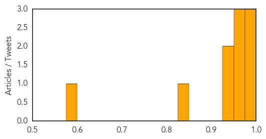
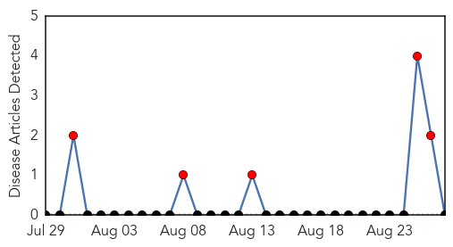

Chikungunya
30-Day Web Trend
0 alerts, 0 warnings

30-Day Twitter Trend
0 alerts, 0 warnings

Article Locations

Article Confidences
Top Articles:
- 0.988
- Dallas County reports 2nd imported chikungunya case
- 0.984
- U.S. helps to combat chikungunya in Samoa - Samoa
- 0.983
- Dallas County Reports Second Case Of Chikungunya Virus
- 0.959
- Second case of chikungunya virus confirmed in Dallas
- 0.958
- DCHHS reports second case of chikungunya
- 0.957
- Case of chikungunya virus confirmed in Dallas
- 0.948
- Health ministry foresees no spike in chikungunya cases
- 0.946
- US Navy helping Samoa deal with virus
- 0.839
- Dallas County reports second confirmed case of Chikungunya in resident returned from Caribbean
- 0.590
- Chemicals used in fogging safe, says health minister
Top Tweets:
-
No tweets found for Aug 27, 2014
Mumps
30-Day Web Trend
30 alerts, 0 warnings

30-Day Twitter Trend
1 alerts, 0 warnings
Article Locations

Article Confidences

Top Articles:
-
No articles found for Aug 27, 2014
Top Tweets:
-
No tweets found for Aug 27, 2014